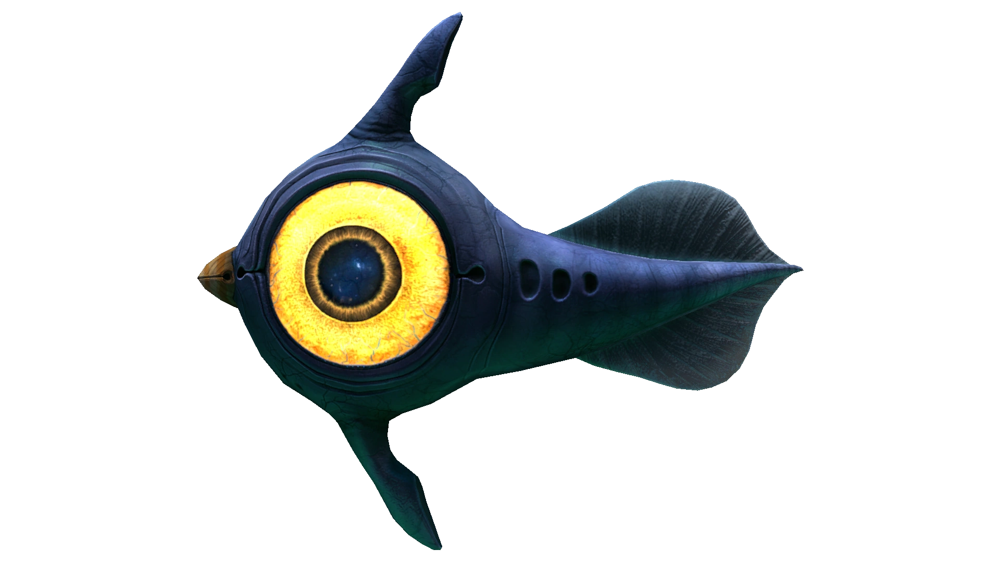
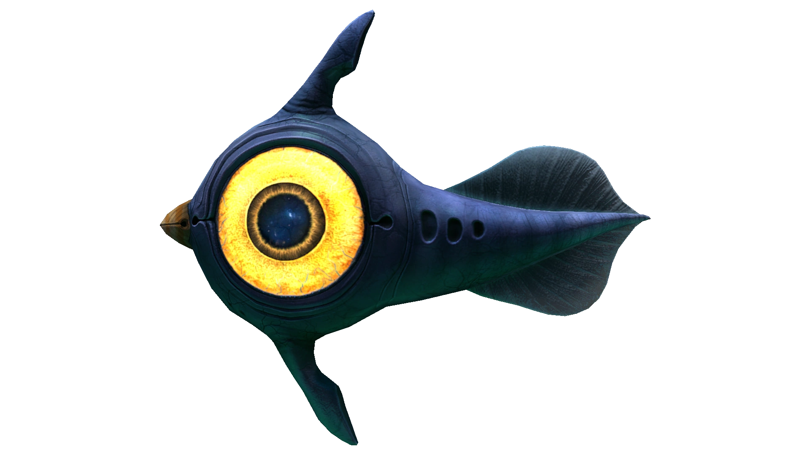
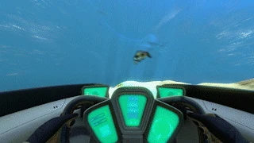
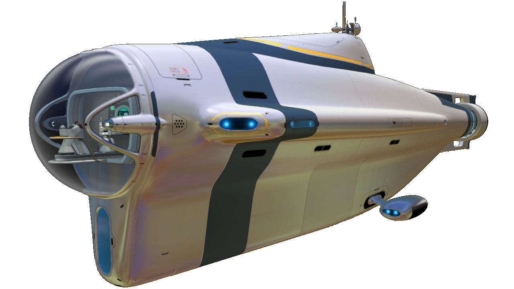
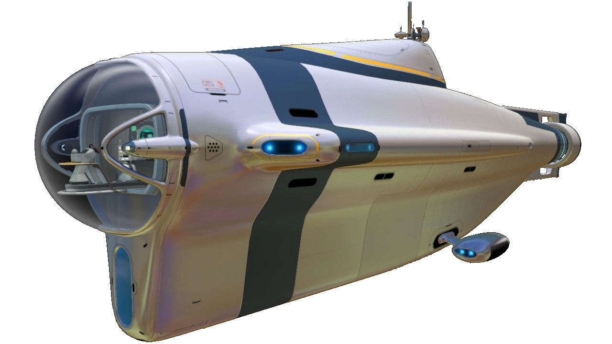

Subnautica è un gioco singleplayer survival e open world, ha vinto il premio "best survival game" nel 2018.
Questo gioco mi piace molto perché puoi esplorare una mappa assurda, tutta sott'acqua con dei sottomarini futuristici bellissimi e avere incontri con la fauna marina composta da pesci pacifici, ma anche da enormi mostri acquatici che ti divoreranno appena ti vedranno.
Hai anche la possibilità di costruire basi modulari dove ricaricare i tuoi veicoli, dormire, rifocillarti, fare acquari dove far schiudere le uova raccolte e osservare i cuccioli, creare osservatori per vedere i leviatani e molto altro. Una delle cose che mi piace di più di questo gioco è che si può moddare, ossia aggiungere mod, ossia modifiche e aggiunte del gioco create dai fan. La mia preferita è "Return Of The Ancients" che aggiunge un leviatano mastodontico, il Gargantuan Leviathan, che nel gioco originale è estinto e si può osservare il suo enorme scheletro. Subnautica tra mod, esplorazione, costruzione di basi e viaggi non annoia mai, tanto è vero che ci gioco da 6 anni.

 
CLICCA QUI PER TORNARE ALLA PAGINA INIZIALE.